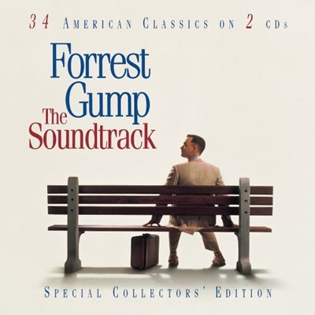
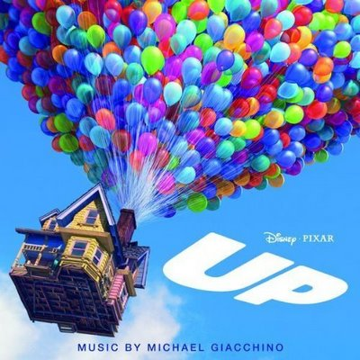
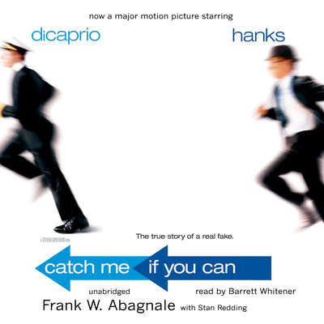

After 5 years at University of Brussels, I got bored and launched Casimodo. Our mission: Ease the return to normalcy of victims post home damages.
See for yourself|  |
Forest GumpForrest Gump is a 1994 American drama film based on the 1986 novel of the same name by Winston Groom. The film was directed by Robert Zemeckis and stars Tom Hanks, Robin Wright, Gary Sinise, Mykelti Williamson, and Sally Field. The story depicts several decades in the life of its titular character (Hanks), a slow-witted but kind-hearted, good-natured and athletically prodigious man from Alabama. Gump witnesses, and in some cases influences, some of the defining events of the latter half of the 20th century in the United States, specifically the period between his birth in 1944 and 1982. The film differs substantially from Winston Groom's novel, including Gump's personality and several events that were depicted. |
|  |
UpUp is a 2009 American 3D computer-animated comedy-drama adventure film[3] produced by Pixar Animation Studios and released by Walt Disney Pictures. Directed by Pete Docter, the film centers on an elderly widower named Carl Fredricksen (Ed Asner) and an earnest boy named Russell (Jordan Nagai). By tying thousands of balloons to his house, Carl sets out to fulfill his dream to see the wilds of South America and complete a promise made to his late wife, Ellie. The film was co-directed by Bob Peterson, with music composed by Michael Giacchino. |
|  |
Catch me if you canCatch Me If You Can is a 2002 American biographical crime film directed and co-produced by Steven Spielberg from a screenplay by Jeff Nathanson. The film is based on the life of Frank Abagnale, who, before his 19th birthday, successfully performed cons worth millions of dollars by posing as a Pan American World Airways pilot, a Georgia doctor and a Louisiana parish prosecutor. His primary crime was check fraud; he became so experienced that the FBI eventually turned to him for help in catching other checking forgers. The film stars Leonardo DiCaprio and Tom Hanks, with Christopher Walken, Martin Sheen, and Nathalie Baye in supporting roles. |